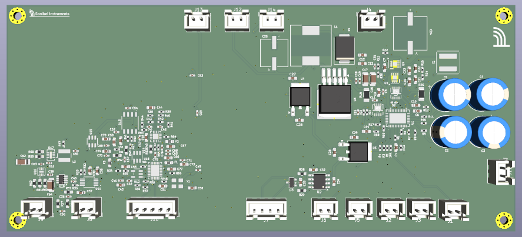
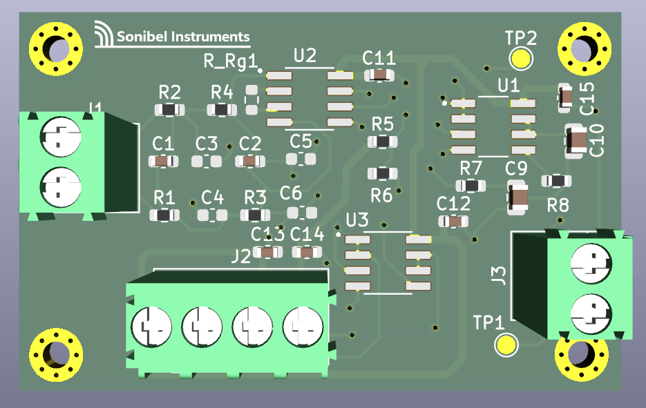
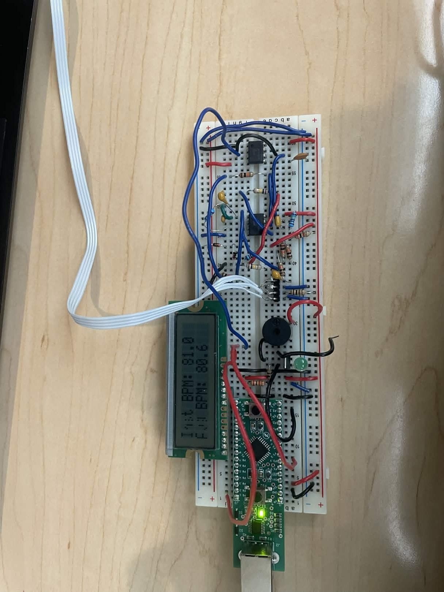
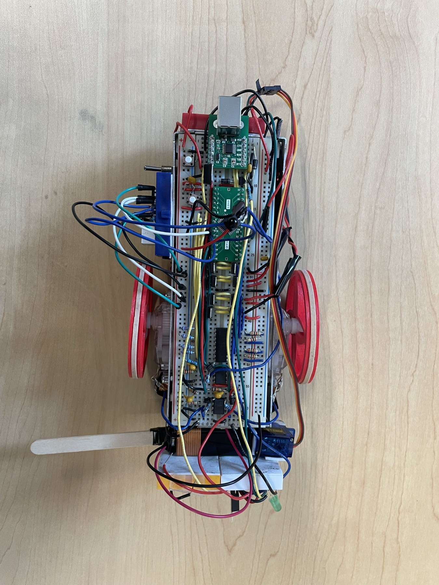
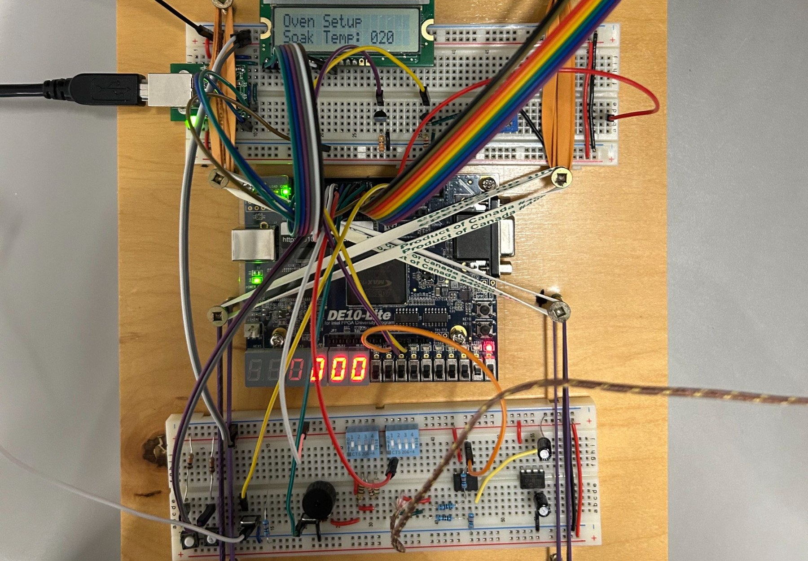
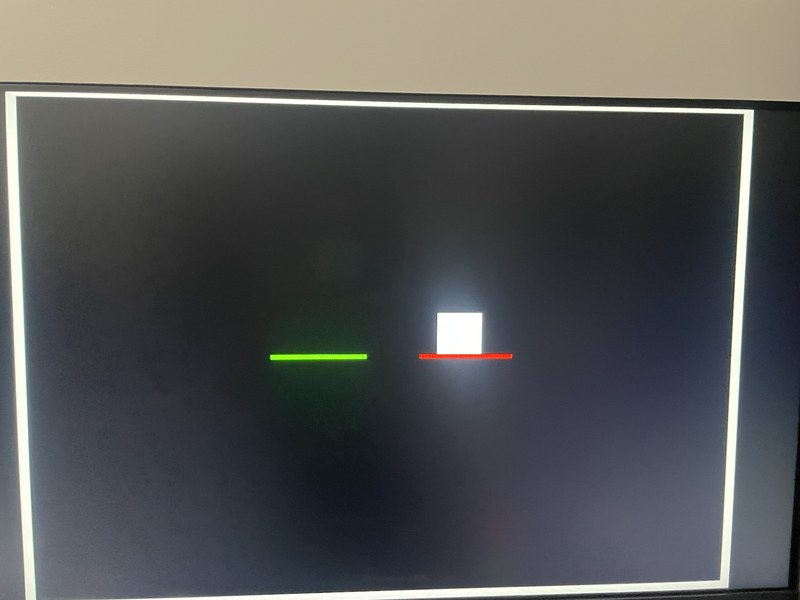

Hardware & embedded systems
Weld data acquisition
Custom PCBs and embedded software for recording weld audio and current, from the microphone input to SQLite storage.
KiCad · C · Linux · CANProject notes ↗
I’m an electrical engineering student at UBC. I work on PCB design, analog circuits, and embedded software—and enjoy getting all three working together on the bench.

A mix of industry work and university projects. Open a project for the design details, schematics, and what I worked on.
Custom PCBs and embedded software for recording weld audio and current, from the microphone input to SQLite storage.

A 4-layer board with two signal paths for filtering and buffering current-sensor measurements.

An optical pulse sensor with an analog signal chain and a Python interface for live heartbeat and BPM display.

A magnetic field-following robot and handheld remote, with IR packet decoding and isolated motor-drive circuitry.

A toaster-oven reflow controller with thermocouple feedback, configurable heating profiles, and a live temperature plot.

A two-player light cycle game with button controls, selectable speed, and scorekeeping on the board’s HEX displays.
Sensor-logging firmware, PCB assembly and testing, and ongoing work on a joystick-based steering control loop.
Custom PCB work, reaction-sensor calibration, and hands-on assembly for UBC’s chemically powered car.
Hands-on work across acquisition hardware, embedded software, and student design teams.
I’m studying electrical engineering at the University of British Columbia, with an option in biomedical engineering.
My work spans analog front ends, custom PCBs, and firmware for collecting sensor data. I also work with SUBC and previously contributed to UBC’s Chem E Car team.
Outside engineering, I’m into drumming and ultimate frisbee.
Read my résumé ↗For engineering opportunities, project questions, or a conversation about electronics.